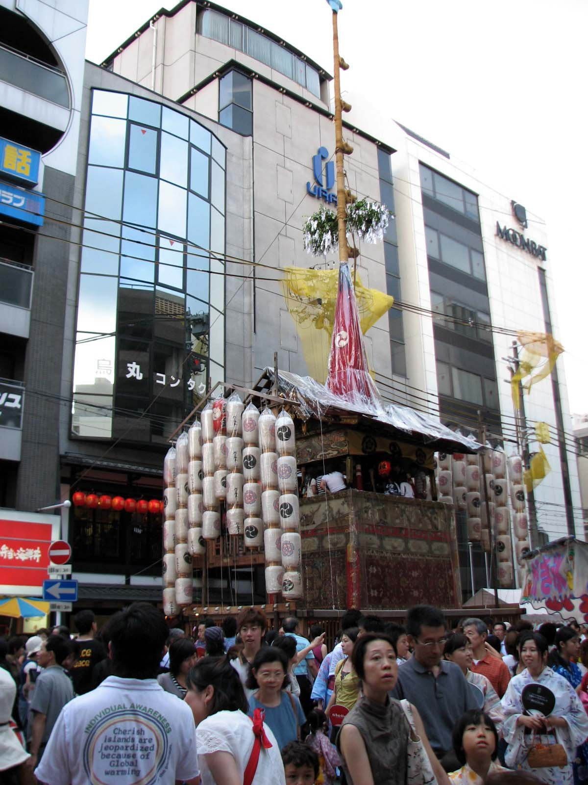
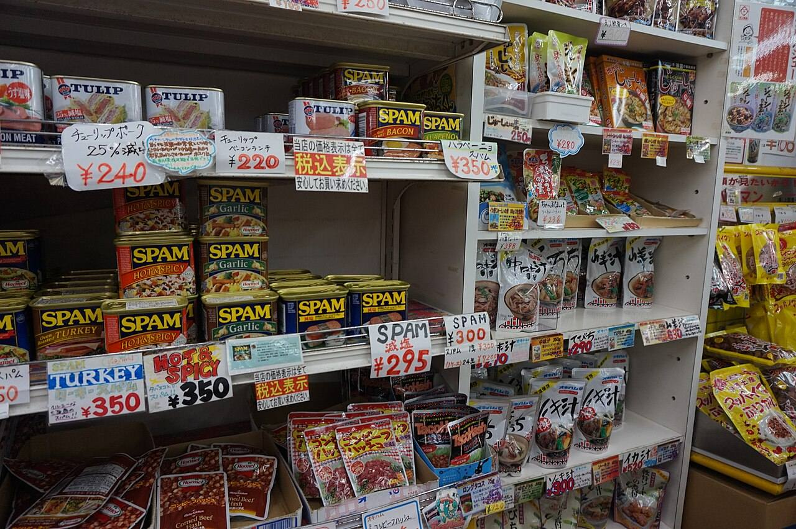
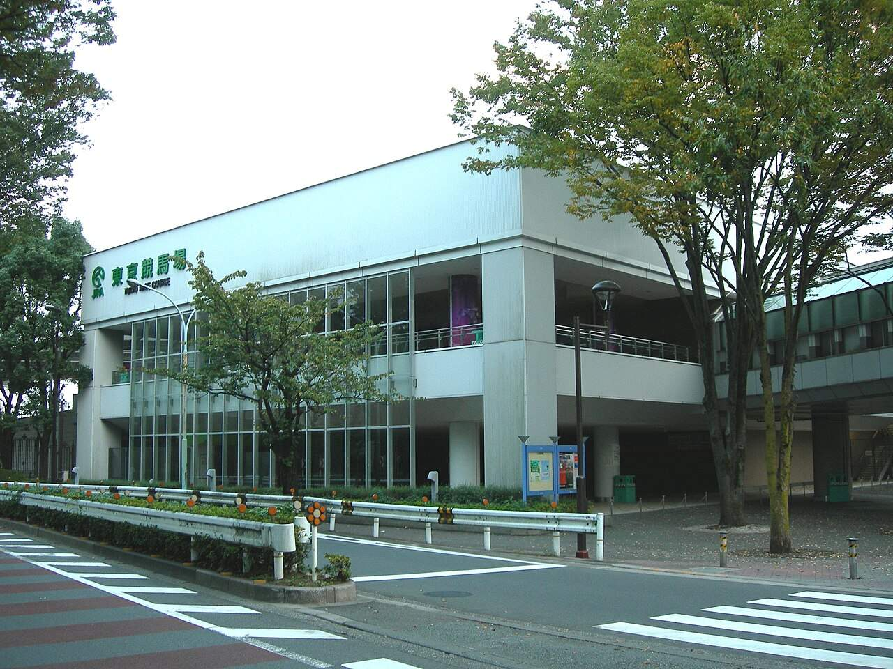
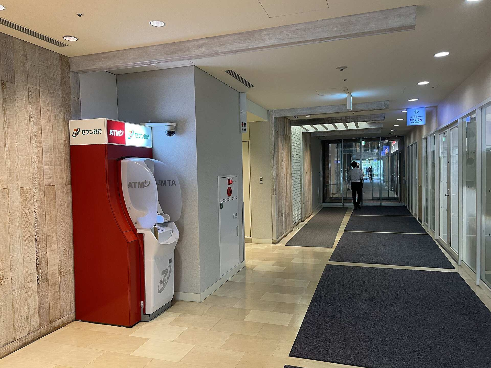
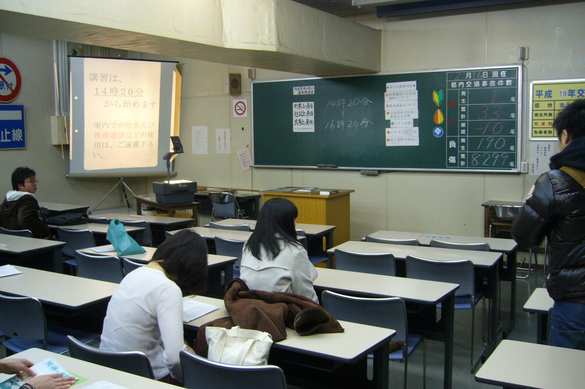

住日本幹嘛啦
住日本幹嘛啦
搬進新家才開始煩惱要不要加入自治會
會費、垃圾站輪值和回覧板都是真的，加入任意也是真的，差別只在自己住的那一區怎麼運作
制度、交通、行政手續：住在日本每天會碰到的事。

會費、垃圾站輪值和回覧板都是真的，加入任意也是真的，差別只在自己住的那一區怎麼運作

水和食物照東京官方的量準備，證件影本、現金和多語言警報才是外國居民最容易漏掉的部分

三連休的活動和採買排在週末，勤労感謝の日讓下週一的窗口休息，要辦的手續和 Japan Cup 的票都得提前安排

在留卡背面還沒有地址，銀行和電信兩邊都辦不下去，順序排對，第一週就能把帳戶和門號安頓好

2025 年 10 月起知識確認改成 50 題要對 45 題，通過率掉到 42.8%，住東京的人記得預約府中或鮫洲
2026 年 4 月 1 日起 16 歲以上適用，反則金 3000 到 12000 日圓，金額照警察廳自行車規則書核對

舊健康保險證的效期在 2025 年 12 月 1 日結束，現在看病帶マイナ保険証或資格確認書，沒辦的人資格確認書會自己寄到家

給食是主食加牛乳加配菜的一整套，2026 年 4 月起公立小學給食費有國與都道府縣的支援，家長要接手的是過敏文件這一關

ワンストップ特例不用跑確定申告，申請書要在隔年 1 月 10 日前寄到，這一關最多人忘

置き配設好之後，回家開門，包裹已經在玄關等你

春菜水分多適合生吃，要炒，挑冬天紮實的那種

同一個郵局櫃檯，台灣、中國算「第 1 地帯」，香港算「第 2 地帯」，寄香港天生貴一截

別跑出入國在留管理局，直接帶在留卡去新家所在地的區役所

企鵝的交棒和交通卡怎麼用，是兩件要分開查的事。